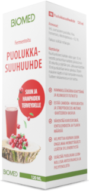

Fermented lingonberry mouthwash is a novel and organic innovation to aid oral home care.
Using a patented method, the natural occurring sugar-content of the lingonberry juice has been reduced by fermentation to a safe level for oral use and does not contain additives. Due to its organic nature, it may also be swallowed. Fermented lingonberry mouthwash protects the oral mucosa from environmental and oxidative stress and is beneficial for oral health.
It prevents inflammation of the gums and assists the healing of gum disease. It also reduces the symptoms caused by mouth dryness by increasing saliva secretion.
This product was featured in British Dental Journal in January 2024 ( download print edition)
Fermented Lingonberry Mouthwash has an EUDAMED Medical Device classification and carries the UDI-ID: 06429811111004.
It is made in Finland by Berries United Ltd and distributed in the UK & ROI by Noooner LIMITED.
Health properties
Laboratory and clinical studies have shown a reduction in dental plaque and bleeding of the gums, and additionally antimicrobial, anti-inflammatory, anti-cancerous, and antioxidant properties. Caries-related Streptococcus mutans and candidosis-related Candida levels are reduced as well as periodontal disease-related pathogen levels. Levels of lactobacilli on the other hand are increased, which is thought to be a beneficial probiotic effect balancing the oral microbiota.
Nutritional value
The lingonberry has almost no calories. It is virtually fat-free and does not contain any saturated fat. Lingonberries also have vitamin E and are a source of dietary fibre. They contain many minerals (e.g. potassium, magnesium and manganese) and micronutrients (e.g. zinc and iron). Arctic lingonberries are rich in polyphenols, for example, lignans, resveratrol, quercetin and proanthocyanidins. It contains more lignans than any other berry species. It is also rich in organic acids, which play an important role as natural preservatives in berries and other foods. Lingonberries are known to have antioxidant, anti-inflammatory, antimicrobial and anti-cancerous properties and are considered beneficial to health.
Ingredients
- Water
- Nordic Lingonberry (Vaccinium vitis-idaea L.)
- Yeast Alcohol volume < 0.5%, fermented
Directions for use
How to use
For intensive treatment, the recommended period of use is two weeks at a time.
Rinse mouth with 10 ml of lingonberry mouthwash twice a day for a duration of 30 seconds.
For continuous use rinse mouth with 10 ml of lingonberry mouthwash once a day for a duration of 30 seconds.
How to measure
The cap of the bottle contains up to 5 ml of liquid. Alternatively, you can use a separate measuring cup.
How to store
The fermented lingonberry mouthwash can be stored at room temperature or in the fridge. Do not freeze.
Use by
The expiry date of each bottle is 18 months from the time of bottling. Once the bottle has been opened, we advise the mouthwash to be used within two weeks. Standard bottle contains 120 ml.
Taste
The initial taste of the fermented lingonberry mouthwash is similar to cranberry juice, followed by a sweet after-taste. Due to its organic properties, it contains a little sediment.
If you like the taste of cranberry juice, you probably like the taste of this product.
Product offerings
The product is offered in four different ways:
Branded product
Berries United Fermented Lingonberry mouthwash.
This retail-ready product (120 ml) is currently sold at nordiclingonberry.com.
White-labelled product
Manufacturing and packaging by the producer accompanied by retailer’s own branding.
For example, Biomed Lingonberry mouthwash sold in Finland.
Bulk product
Manufactured by the producer and delivered to the customer for packaging and branding.
Licensed production
The manufacturer (patent holding entity) provides manufacturing instructions and legal rights to produce and sell the product in defined market areas.
Research
Dr Pirjo Pärnänen (Associate Professor in Oral Microbiology, DMD, PhD) has conducted laboratory studies of fermented lingonberry juice for 15 years, as well as four clinical studies.
Here are a few examples of publications by Dr Pirjo Pärnänen and her peers:
More information can be found in Fermented Lingonberry Mouthwash product presentation.